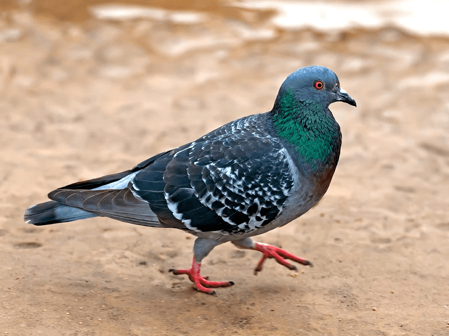

Click on the images for the origami links!
Home
Origami Designs
About Us
Follow Us
Camel
There are two types of camels: One humped or “dromedary” camels and two humped Bactrian camels.
Camels have three sets of eyelids and two rows of eyelashes to keep sand out of their eyes.
Camels have thick lips which let them forage for thorny plants other animals can't eat.
Chameleon
Chameleons have eyes in the backs of their heads.
Chameleons like it hot.
Chameleons come in a lot of different shapes and sizes.
Flying Cicada
People call these cicadas “locusts” but they are not true locusts — real locusts look like grasshoppers.
There are 13-year cicadas too!
Most 17 Year Cicadas have red eyes, but they can also have white, gray, blue, or multi-colored eyes.
Panda
They have great camouflage for their environment.
Their eyes are different to normal bears.
Bamboo is critical to their diet. But they do occasionally eat something other than bamboo.
Pigeon

They can fly at the altitude of 6000 feet.
Pigeons can move their wings ten times per second and maintain heartbeats at the rate of 600 times per minute, during the period of 16 hours.
Pigeons can fly at the speed of 50 to 60 miles per hour. Fastest known pigeon managed to reach speed on 92 miles per hour.
Teddy Bear
Teddy bears got their name from the story that Teddy Roosevelt refused to shoot a bear cub while on a hunting trip in 1902.
The first toy stuffed bear was created by German toymaker Margarete Steiff.
Jackie Miley, a teddy bear collector from Hilly City, South Dakota. She has the world’s biggest teddy bear collection,totaling 8,026 bear friends in 2012.
Follow Us